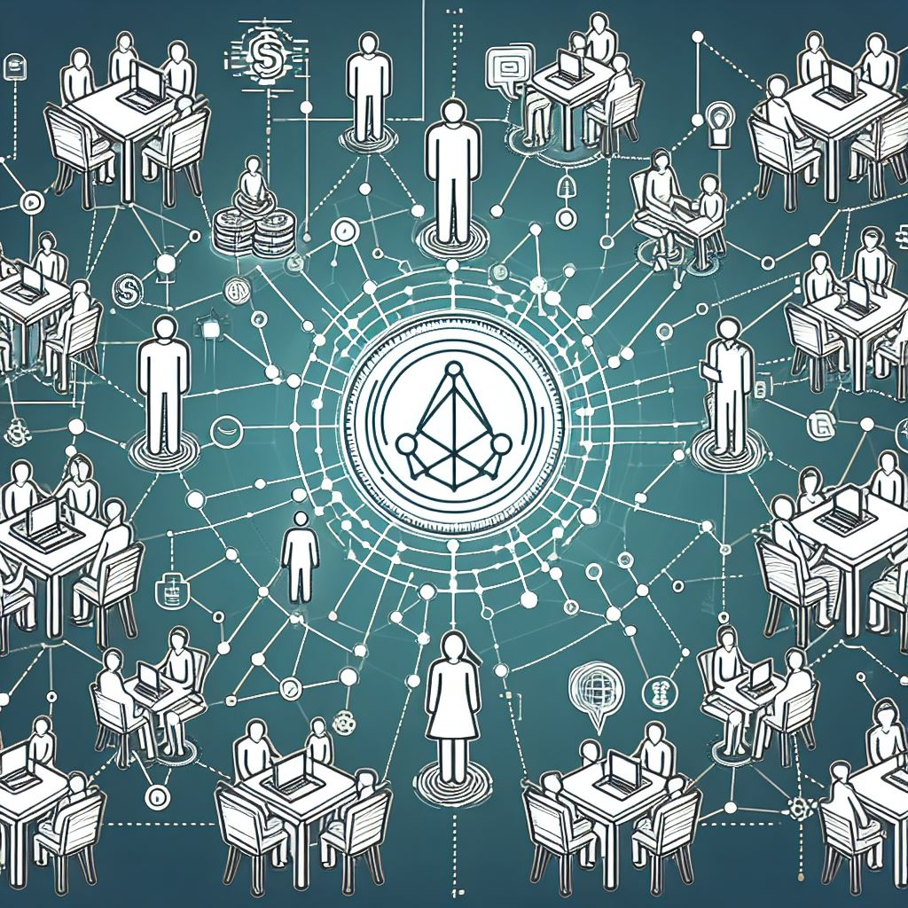

THIS PAGE IS A WORK IN PROGRESS

Guilds
How many skills would you pursue if you had access to paid training or free learning on any subject you desired?
There will be voluntary structures that benefit people in different trades. They will be organic, but our network favors those which adhere to certain principles. These are Guilds. We divide these into two tiers which, between the two, provide opportunities for growth in a myriad of modalities. If you can’t find the Guild you want, you can be the one to create the next great Guild.
Guilds provide members with access to benefits, such as exclusive access to jobs, bounties, and Guild properties.
Directory
Intra-Guild Jobs
Welcome Team
Guild Builders
Hosts
In-Guild Jobs
Welcome Team
Main
Commerce
Hosts
List of Guilds
Guild Support
Member Support
Ambassadors
Builders Guilds
Intrapersonal Guilds
Mechanics Guilds
Media Guilds
Fabrication Guilds
Emergency Response Guilds
Protection Guild
Agriculture Guilds
Inner Guilds
Inner Guilds fulfill a number of requirements which other Guilds do not necessarily follow. They must allow for learning and movement.
An Guild is organized by those within the Guild. They are decided by unanimous consent by default. That can change but as such the status of the Guild might shift. All Guilds, inner and outer, must adhere to the nonaggression principle and seek to attain higher levels of anarchy in all interactions and transactions.
Inner Guilds will have form in that they accommodate people who are of these groups:
- Intermediary
- Intermittent
- Interdisciplinary
- Noncommittal
- Beginner
An inner Guild must adhere to these five core principles:
-
They must accept new members.
-
They must accept auditors.
-
They must have a process of accepting inter-Guild ambassadors, students, and collaborations.
-
The above three must be determined at the discretion of the entire Guild with unanimous consent.
If an Guild by unanimous consent decides to not adhere to one of the core principles, but still desires to adhere to the nonaggression principle and conduct trade with other anarchists, they may be considered an outer Guild.
Outer Guilds
Any Guild that does not wish to adhere to one or more of the four core principles but still adheres to the nonagression principle and does not involve the state may be considered an outer Guild. They will still be listed in our literature and welcomed in the agora. Additionally, newer Guilds or Guilds that are duplicate and not as large as other inner Guilds may also be considered an outer Guild until they reach a certain size.
What Guilds Bring:
- Support for the Community
- Wealth to the Community
- Occupations For People
- Occupational and Interdisciplinary Development
How Guilds are Run:
- Community organized and ran
- Common four core principles and NAP
Agorist Hosts and Guilds
A person's time at an agorist host location can lead them into an Guild.
Determine: How far have you walked down the path. How far can you speak the language.
Tier 1
Gets discounts on goods or services.
Secret chats
More customers
To enter tier 1, complete 10 hours of labor and pass the test. Then 100 hours until tier 2.
Tier 2
To enter tier two, there are certain core achievements one attains, alongside any achievements their Guild may consider tier one minimum achievements.
Barter with other mechanics
Opportunities we need skill for vs something you can be new to
Intra-Guild Jobs
Welcome Team
Guild Information Specialist
Guild Placement Support
Guild Builders
Guild Starters Support
Recruitment
Intra-Guild Relations
Dispatcher / Communications Coordinator
Hosts
Private Land Host for
Individuals and Groups
Workshop Host for
Individuals and Groups
Land Stewards for Properties
In-Guild Jobs
Welcome Team
Guild Information Specialist
In-Guild Placement Support
Main
Tradesperson
Apprentice
Working Instructor
Master/High-Level Faculty
Guild Store Owner / Tender
Commerce
Resource Creation
Tool Creation
Equipment Upkeep
Tool / Materials Sourcing
Trade
Media Crew
Guild-Specific Bounty Bringing
Hosts
Private Land Host for Individuals/Groups
Workshop Host for Individuals/Groups
Land Stewards for Guild Owned Properties
Guild Support
Security for Guild
Locations Acquisition and Host Management
Guild Needs
Guild Events
Emergency Preparedness Guild Representative
Member Support
Member Recruitment
Guild Member Needs
Ambassadors
To Other Guilds
To General Public
From other Guilds
List of Guilds
Builders Guilds
Architects, Stone Layers, Road Makers, Plumbers Guild, Carpenters Guild, Electricians Guild, Bushcraft Structures, Aircrete, Alternative materials and methods.
Intrapersonal Guilds
Connection Games, Counseling, Conflict Resolution
Mechanics Guilds
Car Mechanics, Bicycle Mechanics, Computer Mechanics, Software Engineers
Media Guilds
Filmmakers, Writers, Philosophy
Fabrication Guilds
Metalworkers, Woodworkers, Glassblowers, 3D Printers, Gunsmiths, Reloaders, Recyclers, Welders
Emergency Response Guilds
First Responders, Counter Intelligence Guild
Protection Guild
Ranged, Melee, Weapons, Armor, Tactics, Security
Agriculture Guilds
Farming, Livestock, Permaculture